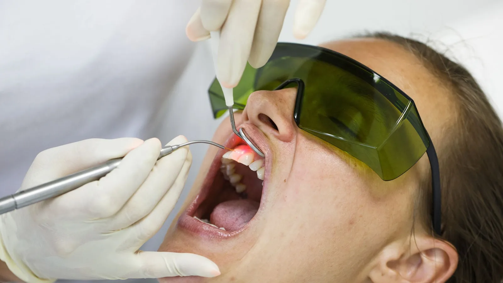

Laser & Digital Dentistry
A useful tool, used where it helps.
A diode laser is a soft-tissue instrument. It works on gum and other soft tissue in the mouth, cutting and sealing at the same time, which means less bleeding during the procedure and often a cleaner field to work in.
It is not a replacement for conventional dentistry, and we will not present it as one. It is used here for particular procedures where it offers a practical advantage over a scalpel or over conventional therapy alone.

Where we use it
Gum reshaping (gingivectomy). Where gum tissue covers more of a tooth than it should — because of overgrowth, because tissue has grown over a partially erupted tooth, or because gum levels are uneven — a laser can reshape the tissue precisely with minimal bleeding.
As an adjunct in gum disease treatment. In selected periodontal cases, laser may be used alongside conventional cleaning below the gum line. It is an addition to that treatment, not a substitute for it, and Dr Meg will be straightforward about what it contributes in your case.
Exposing tissue for restorative work. Where gum tissue is encroaching on the margin of a preparation, a small amount of laser recontouring can make a crown or filling easier to place and finish accurately.
Selected soft-tissue procedures, including minor lesions and tissue tags, assessed individually.
Jaw joint discomfort. Laser is used in some cases as part of managing temporomandibular discomfort. The evidence base for this application is still developing rather than settled, and Dr Meg will tell you plainly what it can and cannot be expected to do. It is offered as one part of a broader approach that may include a splint, habit advice and, in some cases, referral.
What it is not
A diode laser does not cut hard tissue. It does not replace the drill for fillings, and it does not remove decay.
It also does not cure gum disease on its own. Periodontal treatment depends on thorough mechanical cleaning below the gum line and on effective home care. Any practice presenting laser as a shortcut around either of those things is overstating it.
What to expect
Laser soft-tissue procedures are generally carried out under local anaesthetic. The procedure is usually quick, bleeding is typically minimal, and most people find recovery straightforward. Experiences differ between people and procedures, and Dr Meg will explain what to expect for your specific case, including any aftercare.
Protective eyewear is worn by everyone in the room while the laser is in use.
Frequently asked questions
Soft-tissue laser procedures are generally done under local anaesthetic and most people find recovery uncomplicated. No dentist can promise a completely pain-free procedure, and experiences vary.
It is better suited to some situations and not others. Where a laser offers an advantage, that is what we use. Where a conventional approach is more appropriate, we use that instead.
No. It is used alongside conventional periodontal therapy in selected cases, not in place of it.
It may form part of managing jaw joint discomfort, but the evidence is still developing and no one can promise you a result. Dr Meg will assess your jaw and explain the realistic options, including referral where appropriate.
Dental diode lasers are well established for soft-tissue use when operated by a trained clinician with appropriate protective measures. Dr Meg has used laser treatment throughout her regional career.
It depends on the procedure. As with all treatment here, you will be given the cost before it goes ahead.